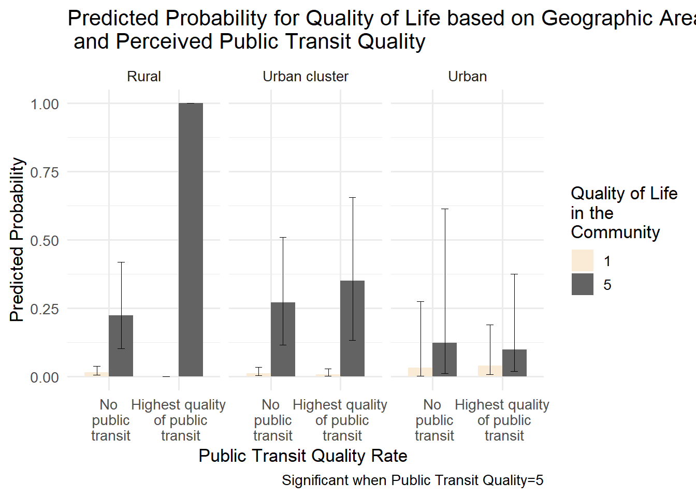

Primary Research Question
- How do modes of transport impact satisfaction of life?
- How do modes of transport affect one’s satisfaction with quality of life?
Mekhala Kumar
December 14, 2023
Dataset- National Community Livability Survey
publictransit<-read_excel("_data/Deliverable-3b-NCLS-Dataset.xlsx",sheet="Data")
backup<-publictransit
# Selecting the required variables
publictransit<-publictransit%>%dplyr::select(Hhveh,Walkrate,Transitrate,transitavail,transitavailns,LifeSat,Comqol,Hhincscale,AgeScale,Edscale,Male,White,Black,AIAN,Hawaiian,Asian,Otherrace,ZipCode,Male)
summary(publictransit) Hhveh Walkrate Transitrate transitavail
Length:994 Length:994 Length:994 Length:994
Class :character Class :character Class :character Class :character
Mode :character Mode :character Mode :character Mode :character
transitavailns LifeSat Comqol Hhincscale
Length:994 Length:994 Length:994 Length:994
Class :character Class :character Class :character Class :character
Mode :character Mode :character Mode :character Mode :character
AgeScale Edscale Male White
Length:994 Length:994 Min. :0.0000 Length:994
Class :character Class :character 1st Qu.:0.0000 Class :character
Mode :character Mode :character Median :0.0000 Mode :character
Mean :0.4125
3rd Qu.:1.0000
Max. :1.0000
Black AIAN Hawaiian Asian
Length:994 Length:994 Length:994 Length:994
Class :character Class :character Class :character Class :character
Mode :character Mode :character Mode :character Mode :character
Otherrace ZipCode
Length:994 Min. : 1201
Class :character 1st Qu.:30532
Mode :character Median :57617
Mean :56044
3rd Qu.:83276
Max. :99921 #Assigning missing values and transforming variables wherever necessary
publictransit[publictransit=="."]<-NA
publictransit$lifesat<-as.numeric(publictransit$LifeSat)
publictransit$qol<-as.factor(publictransit$Comqol)
publictransit$hhveh<-as.numeric(publictransit$Hhveh)
publictransit$walkrate<-as.numeric(publictransit$Walkrate)
publictransit$transitrate<-as.numeric(publictransit$Transitrate)
publictransit$ptavail<-as.numeric(publictransit$transitavail)
publictransit$ptavailns<-as.numeric(publictransit$transitavailns)
publictransit$male<-as.factor(publictransit$Male)
publictransit<-publictransit%>%dplyr::select(-c(LifeSat,Comqol,Hhveh,Walkrate,Transitrate,transitavail,transitavailns,Male))
# Summary Statistics at a Glance
skim(publictransit)| Name | publictransit |
| Number of rows | 994 |
| Number of columns | 18 |
| _______________________ | |
| Column type frequency: | |
| character | 9 |
| factor | 2 |
| numeric | 7 |
| ________________________ | |
| Group variables | None |
Variable type: character
| skim_variable | n_missing | complete_rate | min | max | empty | n_unique | whitespace |
|---|---|---|---|---|---|---|---|
| Hhincscale | 57 | 0.94 | 1 | 1 | 0 | 8 | 0 |
| AgeScale | 3 | 1.00 | 1 | 1 | 0 | 8 | 0 |
| Edscale | 2 | 1.00 | 1 | 1 | 0 | 6 | 0 |
| White | 11 | 0.99 | 1 | 1 | 0 | 2 | 0 |
| Black | 11 | 0.99 | 1 | 1 | 0 | 2 | 0 |
| AIAN | 11 | 0.99 | 1 | 1 | 0 | 2 | 0 |
| Hawaiian | 11 | 0.99 | 1 | 1 | 0 | 2 | 0 |
| Asian | 11 | 0.99 | 1 | 1 | 0 | 2 | 0 |
| Otherrace | 11 | 0.99 | 1 | 1 | 0 | 2 | 0 |
Variable type: factor
| skim_variable | n_missing | complete_rate | ordered | n_unique | top_counts |
|---|---|---|---|---|---|
| qol | 5 | 0.99 | FALSE | 5 | 4: 470, 5: 281, 3: 133, 2: 83 |
| male | 0 | 1.00 | FALSE | 2 | 0: 584, 1: 410 |
Variable type: numeric
| skim_variable | n_missing | complete_rate | mean | sd | p0 | p25 | p50 | p75 | p100 | hist |
|---|---|---|---|---|---|---|---|---|---|---|
| ZipCode | 0 | 1.00 | 56044.03 | 29326.49 | 1201 | 30531.75 | 57617 | 83276 | 99921 | ▅▅▅▅▇ |
| lifesat | 3 | 1.00 | 7.71 | 1.97 | 0 | 7.00 | 8 | 9 | 10 | ▁▁▂▇▇ |
| hhveh | 8 | 0.99 | 1.94 | 0.84 | 0 | 1.00 | 2 | 3 | 3 | ▁▆▁▇▆ |
| walkrate | 22 | 0.98 | 3.17 | 1.08 | 1 | 3.00 | 3 | 4 | 5 | ▂▃▇▆▂ |
| transitrate | 20 | 0.98 | 2.46 | 1.20 | 1 | 1.00 | 2 | 3 | 5 | ▇▆▇▅▂ |
| ptavail | 18 | 0.98 | 0.55 | 0.50 | 0 | 0.00 | 1 | 1 | 1 | ▆▁▁▁▇ |
| ptavailns | 18 | 0.98 | 0.08 | 0.26 | 0 | 0.00 | 0 | 0 | 1 | ▇▁▁▁▁ |
# Creating the perceived public transit quality variable based on transitavail and transitrate
publictransit<-publictransit%>%
mutate(pt_qual=case_when(
ptavail==0~0,
ptavail==1 & transitrate==1~1,
ptavail==1 & transitrate==2~2,
ptavail==1 & transitrate==3~3,
ptavail==1 & transitrate==4~4,
ptavail==1 & transitrate==5~5
))
# Sanity check for new perceived public transit quality variable created
table(publictransit$ptavail)
0 1
386 490 # A tibble: 6 × 3
ptavail transitrate pt_qual
<dbl> <dbl> <dbl>
1 1 4 4
2 1 3 3
3 1 1 1
4 1 3 3
5 0 1 0
6 0 2 0[1] "double"# Converting public transit quality to factor
publictransit$ptqual<-as.factor(publictransit$pt_qual)
publictransit<-publictransit%>%dplyr::select(-c(pt_qual,ptavail,ptavailns,transitrate))
# Creating factor type variables for number of vehicles and walkability
publictransit$walk_fac<-as.factor(publictransit$walkrate)
publictransit$car_fac<-as.factor(publictransit$hhveh)# Taking data from the package zipcodeR
zip<-zip_code_db
# Selecting the required variables from the zipcode dataset
zip<-zip%>%dplyr::select(zipcode,population,population_density)
# Comparing the zipcode information in the 2 datasets
typeof(publictransit$zipcode)Warning: Unknown or uninitialised column: `zipcode`.[1] "NULL"[1] "character"# A tibble: 771 × 1
ZipCode
<dbl>
1 77447
2 87020
3 96052
4 76571
5 63125
6 59643
7 45327
8 81401
9 76689
10 3076
# ℹ 761 more rowsGeographic region- Urban/urban cluster/rural
hhincscale- Income
AgeScale- Age
Edscale- Education
Race- White,Black,AIAN,Hawaiian,Asian,Otherrace- converted to binary
Male- female=0,male=1- binary
0 1
80 796 publictransit<-publictransit%>%
mutate(poc=case_when(
White==1~0,
White==0~1))
table(publictransit$poc)
0 1
796 80 publictransit<-publictransit%>%dplyr::select(-c(White,Black,AIAN,Hawaiian,Asian,Otherrace))
# Merging the 2 datasets (Zipcode and National Community Livability survey)
publictransit<-publictransit%>%
rename(zipcode=ZipCode)
zip$zipcode<-as.numeric(zip$zipcode)
publictransit<-publictransit%>%
left_join(zip,by="zipcode")
# Creating the geographic region variable based on the Census definition
publictransit<-publictransit%>%
mutate(urb_rur=case_when(
population<2500~"Rural",
population>=2500 & population<50000~"Urban cluster",
population>=50000~"Urban"
))
# because some zipcodes don't have associated population values- those values are removed
sum(is.na(publictransit$urb_rur))[1] 15tibble [861 × 17] (S3: tbl_df/tbl/data.frame)
$ Hhincscale : chr [1:861] "6" "5" "3" "6" ...
$ AgeScale : chr [1:861] "2" "5" "4" "5" ...
$ Edscale : chr [1:861] "4" "2" "2" "3" ...
$ zipcode : num [1:861] 77447 87020 96052 76571 63125 ...
$ lifesat : num [1:861] 10 9 5 8 5 9 8 8 8 10 ...
$ qol : Factor w/ 5 levels "1","2","3","4",..: 5 4 3 4 2 4 5 4 5 3 ...
$ hhveh : num [1:861] 2 2 3 2 1 2 1 1 3 2 ...
$ walkrate : num [1:861] 2 3 4 4 1 3 3 4 3 3 ...
$ male : Factor w/ 2 levels "0","1": 1 1 2 2 1 1 2 2 1 1 ...
$ ptqual : Factor w/ 6 levels "0","1","2","3",..: 5 4 2 4 1 1 1 5 1 5 ...
$ walk_fac : Factor w/ 5 levels "1","2","3","4",..: 2 3 4 4 1 3 3 4 3 3 ...
$ car_fac : Factor w/ 4 levels "0","1","2","3": 3 3 4 3 2 3 2 2 4 3 ...
$ poc : num [1:861] 0 0 0 0 0 0 0 0 0 0 ...
$ population : int [1:861] 11872 11347 1460 6790 32201 437 8917 22437 3996 12897 ...
$ population_density: num [1:861] 119 11 19 57 3242 ...
$ urb_rur : chr [1:861] "Urban cluster" "Urban cluster" "Rural" "Urban cluster" ...
$ type : Factor w/ 3 levels "Rural","Urban cluster",..: 2 2 1 2 2 1 2 2 2 2 ...# Transforming variables wherever necessary
publictransit$hhincscale<-as.numeric(publictransit$Hhincscale)
publictransit$age<-as.numeric(publictransit$AgeScale)
publictransit$educ<-as.numeric(publictransit$Edscale)
publictransit<-publictransit%>%dplyr::select(-c(Hhincscale,AgeScale,Edscale,zipcode,population,population_density,urb_rur))# Plotting distributions for the dependent variables
ggplot(publictransit,aes(lifesat))+
geom_histogram(binwidth=1)+
geom_text(stat="count",aes(label = ..count..),vjust=0.02)+
labs(title="Distribution of Life Satisfaction",x="Life Satisfaction")Warning: The dot-dot notation (`..count..`) was deprecated in ggplot2 3.4.0.
ℹ Please use `after_stat(count)` instead.[1] 7.681765[1] 3.840469ggplot(publictransit,aes(qol))+
geom_bar()+
geom_text(stat="count",aes(label = ..count..),vjust=0.01)+
labs(title="Distribution of Satisfaction with Quality of Life in the Community",x=" Satisfaction with Quality of Life" )# Linear regression
lm2<-lm(lifesat~car_fac*ptqual+type*ptqual+walkrate+ hhincscale+age+educ+poc+male, data=publictransit)
# Ordinal Logistic Regression
logit2<-polr(qol~car_fac*ptqual+type*ptqual+walk_fac+ hhincscale+age+educ+poc+male, data=publictransit,method="logistic")Warning: glm.fit: fitted probabilities numerically 0 or 1 occurredlmcomp<-stargazer(lm1,lm2, type="text",
dep.var.labels=c("Satisfaction with Life"),
covariate.labels=c("# of cars in household (numeric)",
" 1 car",
"2 cars",
"3 cars",
"Public Transit Quality (PTQ)-Level 1 (reference:0)",
"PTQ Level 2",
"PTQ Level 3",
"PTQ Level 4",
"PTQ Level 5",
"Urban Cluster (reference:Rural)",
"Urban(reference:Rural)",
"Walkability Level 2 (reference:1)",
"Walkability Level 3",
"Walkability Level 4",
"Walkability Level 5",
"Walkability Rate (numeric)",
"Household Income",
"Age",
"Education",
"Race (0=white,1=person of colour)",
"Gender(0=female,1=male)",
"# of cars in household:PTQ Level 1",
" # of cars in household:PTQ Level 2",
"# of cars in household:PTQ Level 3",
"# of cars in household:PTQ Level 4",
"# of cars in household:PTQ Level 5",
" 1 car: PTQ Level 1",
" 2 cars: PTQ Level 1",
" 3 cars: PTQ Level 1",
" 1 car: PTQ Level 2",
" 2 cars: PTQ Level 2",
" 3 cars: PTQ Level 2",
" 1 car: PTQ Level 3",
" 2 cars: PTQ Level 3",
" 3 cars: PTQ Level 3",
" 1 car: PTQ Level 4",
" 2 cars: PTQ Level 4",
" 3 cars: PTQ Level 4",
" 1 car: PTQ Level 5",
" 2 cars: PTQ Level 5",
" 3 cars: PTQ Level 5",
"PTQ Level 1:Urban Cluster",
"PTQ Level 2:Urban Cluster",
"PTQ Level 3:Urban Cluster",
"PTQ Level 4:Urban Cluster",
"PTQ Level 5:Urban Cluster",
"PTQ Level 1:Urban",
"PTQ Level 2:Urban",
"PTQ Level 3:Urban",
"PTQ Level 4:Urban",
"PTQ Level 5:Urban"), single.row=TRUE)
==================================================================================================
Dependent variable:
-----------------------------------------------
Satisfaction with Life
(1) (2)
--------------------------------------------------------------------------------------------------
# of cars in household (numeric) 0.238* (0.130)
1 car -0.613 (0.647)
2 cars -0.792 (0.642)
3 cars -0.048 (0.653)
Public Transit Quality (PTQ)-Level 1 (reference:0) 0.482 (1.043) -0.436 (1.643)
PTQ Level 2 -0.246 (0.749) -0.364 (1.206)
PTQ Level 3 -0.086 (0.750) -0.547 (1.157)
PTQ Level 4 0.581 (0.891) -0.858 (1.368)
PTQ Level 5 2.200 (1.538) 1.552 (1.877)
Urban Cluster (reference:Rural) 0.024 (0.215) 0.025 (0.214)
Urban(reference:Rural) 0.834 (1.318) 1.067 (1.318)
Walkability Level 2 (reference:1) -0.060 (0.273)
Walkability Level 3 0.200 (0.254)
Walkability Level 4 0.340 (0.261)
Walkability Level 5 1.013*** (0.310)
Walkability Rate (numeric) 0.218*** (0.063)
Household Income 0.206*** (0.043) 0.212*** (0.043)
Age 0.312*** (0.043) 0.319*** (0.043)
Education -0.002 (0.049) -0.001 (0.050)
Race (0=white,1=person of colour) 0.314 (0.224) 0.278 (0.227)
Gender(0=female,1=male) -0.463*** (0.130) -0.491*** (0.130)
# of cars in household:PTQ Level 1 0.130 (0.328)
# of cars in household:PTQ Level 2 0.270 (0.262)
# of cars in household:PTQ Level 3 -0.040 (0.204)
# of cars in household:PTQ Level 4 -0.056 (0.243)
# of cars in household:PTQ Level 5 -0.423 (0.397)
1 car: PTQ Level 1 1.205 (1.534)
2 cars: PTQ Level 1 1.247 (1.532)
3 cars: PTQ Level 1 1.340 (1.529)
1 car: PTQ Level 2 -0.034 (1.209)
2 cars: PTQ Level 2 1.049 (1.169)
3 cars: PTQ Level 2 0.798 (1.191)
1 car: PTQ Level 3 -0.171 (1.090)
2 cars: PTQ Level 3 0.911 (1.073)
3 cars: PTQ Level 3 -0.161 (1.082)
1 car: PTQ Level 4 1.027 (1.168)
2 cars: PTQ Level 4 1.623 (1.157)
3 cars: PTQ Level 4 0.674 (1.179)
1 car: PTQ Level 5 0.273 (1.312)
2 cars: PTQ Level 5 0.315 (1.352)
3 cars: PTQ Level 5 -0.300 (1.584)
PTQ Level 1:Urban Cluster -1.001 (0.801) -1.092 (0.802)
PTQ Level 2:Urban Cluster -0.337 (0.595) -0.405 (0.600)
PTQ Level 3:Urban Cluster 0.141 (0.668) 0.236 (0.670)
PTQ Level 4:Urban Cluster -0.079 (0.807) 0.073 (0.811)
PTQ Level 5:Urban Cluster -1.224 (1.378) -1.343 (1.426)
PTQ Level 1:Urban -0.854 (1.986) -1.079 (1.982)
PTQ Level 2:Urban -0.449 (1.639) -0.859 (1.649)
PTQ Level 3:Urban -1.374 (1.637) -1.613 (1.640)
PTQ Level 4:Urban -0.950 (1.645) -0.827 (1.658)
PTQ Level 5:Urban -2.642 (2.014) -2.933 (2.080)
Constant 4.564*** (0.461) 5.063*** (0.716)
--------------------------------------------------------------------------------------------------
Observations 861 861
R2 0.151 0.164
Adjusted R2 0.119 0.122
Residual Std. Error 1.840 (df = 828) 1.836 (df = 819)
F Statistic 4.615*** (df = 32; 828) 3.910*** (df = 41; 819)
==================================================================================================
Note: *p<0.1; **p<0.05; ***p<0.01#cat(lmcomp, file = "output_lmcomp.html")
logitcomp1<-stargazer(logit2,logit5,type="text",
dep.var.labels = c("Satisfaction with Quality of Life"),
covariate.labels=c(" 1 car",
"2 cars",
"3 cars",
"# of cars in household",
"Public Transit Quality (PTQ)-Level 1 (reference:0)",
"PTQ Level 2",
"PTQ Level 3",
"PTQ Level 4",
"PTQ Level 5",
"Urban Cluster (reference:Rural)",
"Urban(reference:Rural)",
"Walkability Level 2 (reference:1)",
"Walkability Level 3",
"Walkability Level 4",
"Walkability Level 5",
"Walkability Rate",
"Household Income",
"Age",
"Education",
"Race (0=white,1=person of colour)",
"Gender(0=female,1=male)",
" 1 car: PTQ Level 1",
" 2 cars: PTQ Level 1",
" 3 cars: PTQ Level 1",
" 1 car: PTQ Level 2",
" 2 cars: PTQ Level 2",
" 3 cars: PTQ Level 2",
" 1 car: PTQ Level 3",
" 2 cars: PTQ Level 3",
" 3 cars: PTQ Level 3",
" 1 car: PTQ Level 4",
" 2 cars: PTQ Level 4",
" 3 cars: PTQ Level 4",
" 1 car: PTQ Level 5",
" 2 cars: PTQ Level 5",
" 3 cars: PTQ Level 5",
"# of cars in household:PTQ Level 1",
" # of cars in household:PTQ Level 2",
"# of cars in household:PTQ Level 3",
"# of cars in household:PTQ Level 4",
"# of cars in household:PTQ Level 5",
"PTQ Level 1:Urban Cluster",
"PTQ Level 2:Urban Cluster",
"PTQ Level 3:Urban Cluster",
"PTQ Level 4:Urban Cluster",
"PTQ Level 5:Urban Cluster",
"PTQ Level 1:Urban",
"PTQ Level 2:Urban",
"PTQ Level 3:Urban",
"PTQ Level 4:Urban",
"PTQ Level 5:Urban"), single.row=TRUE)
========================================================================================
Dependent variable:
-------------------------------------
Satisfaction with Quality of Life
(1) (2)
----------------------------------------------------------------------------------------
1 car -1.074 (0.777)
2 cars -0.612 (0.774)
3 cars -0.329 (0.783)
# of cars in household 0.273** (0.136)
Public Transit Quality (PTQ)-Level 1 (reference:0) 1.743 (1.872) 0.215 (1.137)
PTQ Level 2 -0.320 (1.216) 1.493* (0.763)
PTQ Level 3 -0.006 (1.223) 0.759 (0.743)
PTQ Level 4 0.733 (1.475) 1.879** (0.925)
PTQ Level 5 10.607*** (1.122) 12.457*** (0.645)
Urban Cluster (reference:Rural) 0.291 (0.229) 0.253 (0.225)
Urban(reference:Rural) -0.760 (1.158) -0.712 (1.149)
Walkability Level 2 (reference:1) 0.578** (0.280)
Walkability Level 3 1.106*** (0.265)
Walkability Level 4 1.534*** (0.277)
Walkability Level 5 2.608*** (0.339)
Walkability Rate 0.587*** (0.068)
Household Income 0.132*** (0.045) 0.139*** (0.044)
Age 0.242*** (0.046) 0.226*** (0.045)
Education 0.070 (0.052) 0.052 (0.051)
Race (0=white,1=person of colour) -0.285 (0.240) -0.265 (0.236)
Gender(0=female,1=male) -0.266* (0.136) -0.237* (0.133)
1 car: PTQ Level 1 -0.291 (1.781)
2 cars: PTQ Level 1 -2.248 (1.753)
3 cars: PTQ Level 1 -0.043 (1.764)
1 car: PTQ Level 2 1.796 (1.217)
2 cars: PTQ Level 2 1.020 (1.167)
3 cars: PTQ Level 2 0.282 (1.193)
1 car: PTQ Level 3 0.808 (1.177)
2 cars: PTQ Level 3 0.630 (1.161)
3 cars: PTQ Level 3 0.531 (1.169)
1 car: PTQ Level 4 1.109 (1.276)
2 cars: PTQ Level 4 0.452 (1.260)
3 cars: PTQ Level 4 0.202 (1.284)
1 car: PTQ Level 5 0.541 (1.589)
2 cars: PTQ Level 5 -0.004 (1.628)
3 cars: PTQ Level 5 -1.096 (1.928)
# of cars in household:PTQ Level 1 0.087 (0.353)
# of cars in household:PTQ Level 2 -0.476* (0.264)
# of cars in household:PTQ Level 3 -0.078 (0.210)
# of cars in household:PTQ Level 4 -0.347 (0.254)
# of cars in household:PTQ Level 5 -0.493 (0.441)
PTQ Level 1:Urban Cluster -1.729** (0.821) -1.188 (0.852)
PTQ Level 2:Urban Cluster -0.644 (0.628) -0.553 (0.612)
PTQ Level 3:Urban Cluster -0.912 (0.666) -0.900 (0.655)
PTQ Level 4:Urban Cluster -1.024 (0.850) -0.985 (0.835)
PTQ Level 5:Urban Cluster -10.211*** (0.686) -11.113*** (0.537)
PTQ Level 1:Urban 2.072 (2.070) 1.690 (1.944)
PTQ Level 2:Urban -0.743 (1.483) -0.746 (1.457)
PTQ Level 3:Urban 0.500 (1.502) 0.420 (1.490)
PTQ Level 4:Urban 0.326 (1.572) 0.342 (1.540)
PTQ Level 5:Urban -10.859*** (1.067) -11.738*** (0.932)
----------------------------------------------------------------------------------------
Observations 861 861
========================================================================================
Note: *p<0.1; **p<0.05; ***p<0.01logitcomp2<-stargazer(logit5,lm_qol, type="text",
dep.var.labels = c("Satisfaction with Quality of Life"),
covariate.labels=c("# of cars in household",
"Public Transit Quality (PTQ)-Level 1 (reference:0)",
"PTQ Level 2",
"PTQ Level 3",
"PTQ Level 4",
"PTQ Level 5",
"Urban Cluster (reference:Rural)",
"Urban(reference:Rural)",
"Walkability Rate",
"Household Income",
"Age",
"Education",
"Race (0=white,1=person of colour)",
"Gender(0=female,1=male)",
"# of cars in household:PTQ Level 1",
" # of cars in household:PTQ Level 2",
"# of cars in household:PTQ Level 3",
"# of cars in household:PTQ Level 4",
"# of cars in household:PTQ Level 5",
"PTQ Level 1:Urban Cluster",
"PTQ Level 2:Urban Cluster",
"PTQ Level 3:Urban Cluster",
"PTQ Level 4:Urban Cluster",
"PTQ Level 5:Urban Cluster",
"PTQ Level 1:Urban",
"PTQ Level 2:Urban",
"PTQ Level 3:Urban",
"PTQ Level 4:Urban",
"PTQ Level 5:Urban"), single.row=TRUE)
============================================================================================================
Dependent variable:
---------------------------------------------------------
Satisfaction with Quality of Life qol_num
ordered OLS
logistic
(1) (2)
------------------------------------------------------------------------------------------------------------
# of cars in household 0.273** (0.136) 0.125** (0.063)
Public Transit Quality (PTQ)-Level 1 (reference:0) 0.215 (1.137) 0.046 (0.506)
PTQ Level 2 1.493* (0.763) 0.678* (0.363)
PTQ Level 3 0.759 (0.743) 0.521 (0.364)
PTQ Level 4 1.879** (0.925) 0.858** (0.433)
PTQ Level 5 12.457*** (0.645) 1.169 (0.747)
Urban Cluster (reference:Rural) 0.253 (0.225) 0.104 (0.104)
Urban(reference:Rural) -0.712 (1.149) -0.271 (0.640)
Walkability Rate 0.587*** (0.068) 0.260*** (0.030)
Household Income 0.139*** (0.044) 0.069*** (0.021)
Age 0.226*** (0.045) 0.108*** (0.021)
Education 0.052 (0.051) 0.021 (0.024)
Race (0=white,1=person of colour) -0.265 (0.236) -0.164 (0.109)
Gender(0=female,1=male) -0.237* (0.133) -0.093 (0.063)
# of cars in household:PTQ Level 1 0.087 (0.353) 0.075 (0.160)
# of cars in household:PTQ Level 2 -0.476* (0.264) -0.213* (0.127)
# of cars in household:PTQ Level 3 -0.078 (0.210) -0.078 (0.099)
# of cars in household:PTQ Level 4 -0.347 (0.254) -0.143 (0.118)
# of cars in household:PTQ Level 5 -0.493 (0.441) -0.205 (0.192)
PTQ Level 1:Urban Cluster -1.188 (0.852) -0.592 (0.389)
PTQ Level 2:Urban Cluster -0.553 (0.612) -0.236 (0.289)
PTQ Level 3:Urban Cluster -0.900 (0.655) -0.488 (0.325)
PTQ Level 4:Urban Cluster -0.985 (0.835) -0.483 (0.392)
PTQ Level 5:Urban Cluster -11.113*** (0.537) -0.559 (0.669)
PTQ Level 1:Urban 1.690 (1.944) 0.606 (0.964)
PTQ Level 2:Urban -0.746 (1.457) -0.449 (0.797)
PTQ Level 3:Urban 0.420 (1.490) 0.124 (0.796)
PTQ Level 4:Urban 0.342 (1.540) 0.044 (0.798)
PTQ Level 5:Urban -11.738*** (0.932) -0.781 (0.978)
Constant 1.866*** (0.226)
------------------------------------------------------------------------------------------------------------
Observations 861 861
R2 0.185
Adjusted R2 0.157
Residual Std. Error 0.895 (df = 831)
F Statistic 6.521*** (df = 29; 831)
============================================================================================================
Note: *p<0.1; **p<0.05; ***p<0.01#cat(logitcomp, file = "output_logitcomp.html")
# Checking parameters such as AIC, BIC, RMSE
model_performance(logit2)Can't calculate log-loss.
Can't calculate proper scoring rules for ordinal, multinomial or cumulative link models.# Indices of model performance
AIC | AICc | BIC | Nagelkerke's R2 | RMSE | Sigma
----------------------------------------------------------------
2096.434 | 2102.227 | 2324.823 | 0.227 | 3.831 | 1.565logitcomp<-stargazer(logit2,logit5,lm_qol,type=“text”, dep.var.labels = c(“Satisfaction with Quality of Life”,“Satisfaction with Quality of Life”), covariate.labels=c(” 1 car”, “2 cars”, “3 cars”, “# of cars in household”, “Public Transit Quality (PTQ)-Level 1 (reference:0)”, “PTQ Level 2”, “PTQ Level 3”, “PTQ Level 4”, “PTQ Level 5”, “Urban Cluster (reference:Rural)”, “Urban(reference:Rural)”, “Walkability Level 2 (reference:1)”, “Walkability Level 3”, “Walkability Level 4”, “Walkability Level 5”, “Walkability Rate”, “Household Income”, “Age”, “Education”, “Race (0=white,1=person of colour)”, “Gender(0=female,1=male)”, ” 1 car: PTQ Level 1”, ” 2 cars: PTQ Level 1”, ” 3 cars: PTQ Level 1”, ” 1 car: PTQ Level 2”, ” 2 cars: PTQ Level 2”, ” 3 cars: PTQ Level 2”, ” 1 car: PTQ Level 3”, ” 2 cars: PTQ Level 3”, ” 3 cars: PTQ Level 3”, ” 1 car: PTQ Level 4”, ” 2 cars: PTQ Level 4”, ” 3 cars: PTQ Level 4”, ” 1 car: PTQ Level 5”, ” 2 cars: PTQ Level 5”, ” 3 cars: PTQ Level 5”, “# of cars in household:PTQ Level 1”, ” # of cars in household:PTQ Level 2”, “# of cars in household:PTQ Level 3”, “# of cars in household:PTQ Level 4”, “# of cars in household:PTQ Level 5”, “PTQ Level 1:Urban Cluster”, “PTQ Level 2:Urban Cluster”, “PTQ Level 3:Urban Cluster”, “PTQ Level 4:Urban Cluster”, “PTQ Level 5:Urban Cluster”, “PTQ Level 1:Urban”, “PTQ Level 2:Urban”, “PTQ Level 3:Urban”, “PTQ Level 4:Urban”, “PTQ Level 5:Urban”), single.row=TRUE)
lm1_table<-stargazer(lm1,type="text",
dep.var.labels=c("Satisfaction with Life"),
covariate.labels=c("# of cars in household",
"Public Transit Quality (PTQ)-Level 1 (reference:0)",
"PTQ Level 2",
"PTQ Level 3",
"PTQ Level 4",
"PTQ Level 5",
"Urban Cluster (reference:Rural)",
"Urban(reference:Rural)",
"Walkability Level 2 (reference:1)",
"Walkability Level 3",
"Walkability Level 4",
"Walkability Level 5",
"Household Income",
"Age",
"Education",
"Race (0=white,1=person of colour)",
"Gender(0=female,1=male)",
"# of cars in household:PTQ Level 1",
" # of cars in household:PTQ Level 2",
"# of cars in household:PTQ Level 3",
"# of cars in household:PTQ Level 4",
"# of cars in household:PTQ Level 5",
"PTQ Level 1:Urban Cluster",
"PTQ Level 2:Urban Cluster",
"PTQ Level 3:Urban Cluster",
"PTQ Level 4:Urban Cluster",
"PTQ Level 5:Urban Cluster",
"PTQ Level 1:Urban",
"PTQ Level 2:Urban",
"PTQ Level 3:Urban",
"PTQ Level 4:Urban",
"PTQ Level 5:Urban"), single.row=TRUE)
==============================================================================
Dependent variable:
---------------------------
Satisfaction with Life
------------------------------------------------------------------------------
# of cars in household 0.238* (0.130)
Public Transit Quality (PTQ)-Level 1 (reference:0) 0.482 (1.043)
PTQ Level 2 -0.246 (0.749)
PTQ Level 3 -0.086 (0.750)
PTQ Level 4 0.581 (0.891)
PTQ Level 5 2.200 (1.538)
Urban Cluster (reference:Rural) 0.024 (0.215)
Urban(reference:Rural) 0.834 (1.318)
Walkability Level 2 (reference:1) -0.060 (0.273)
Walkability Level 3 0.200 (0.254)
Walkability Level 4 0.340 (0.261)
Walkability Level 5 1.013*** (0.310)
Household Income 0.206*** (0.043)
Age 0.312*** (0.043)
Education -0.002 (0.049)
Race (0=white,1=person of colour) 0.314 (0.224)
Gender(0=female,1=male) -0.463*** (0.130)
# of cars in household:PTQ Level 1 0.130 (0.328)
# of cars in household:PTQ Level 2 0.270 (0.262)
# of cars in household:PTQ Level 3 -0.040 (0.204)
# of cars in household:PTQ Level 4 -0.056 (0.243)
# of cars in household:PTQ Level 5 -0.423 (0.397)
PTQ Level 1:Urban Cluster -1.001 (0.801)
PTQ Level 2:Urban Cluster -0.337 (0.595)
PTQ Level 3:Urban Cluster 0.141 (0.668)
PTQ Level 4:Urban Cluster -0.079 (0.807)
PTQ Level 5:Urban Cluster -1.224 (1.378)
PTQ Level 1:Urban -0.854 (1.986)
PTQ Level 2:Urban -0.449 (1.639)
PTQ Level 3:Urban -1.374 (1.637)
PTQ Level 4:Urban -0.950 (1.645)
PTQ Level 5:Urban -2.642 (2.014)
Constant 4.564*** (0.461)
------------------------------------------------------------------------------
Observations 861
R2 0.151
Adjusted R2 0.119
Residual Std. Error 1.840 (df = 828)
F Statistic 4.615*** (df = 32; 828)
==============================================================================
Note: *p<0.1; **p<0.05; ***p<0.01# Calculating predicted values for walkability and number of vehicles owned
pred_ols<-ggpredict(lm1, terms="walk_fac")
pred_ols_car<-ggpredict(lm1, terms="hhveh")
#pred_ols
#pred_ols_car
# Graph for Number of Vehicles Owned
ggplot(pred_ols_car, aes(x=x, y=predicted)) +
geom_point() +
geom_errorbar(aes(ymin=conf.low, ymax=conf.high),
linewidth=.3, width=.2,position=position_dodge(.9))+
labs(x = "Number of Vehicles in the Household", y = "Predicted Scores for Life Satisfaction") +
ggtitle("Effect of Having Vehicles on Life Satisfaction") # Graph for Walkability
ggplot(pred_ols, aes(x=x, y=predicted)) +
geom_point() +
geom_errorbar(aes(ymin=conf.low, ymax=conf.high),linewidth=.3, width=.2,position=position_dodge(.9))+
labs(x = "Perceived Walkability Rate", y = "Predicted Scores for Life Satisfaction",caption="Only significant when walkability rate=5")+
ggtitle("Perceived Walkability Rate and Life Satisfaction") logit5table<-stargazer(logit5,type="text",
dep.var.labels=c("Satisfaction with Quality of Life in the Community"),
covariate.labels=c("# of cars in household",
"Public Transit Quality (PTQ)-Level 1 (reference:0)",
"PTQ Level 2",
"PTQ Level 3",
"PTQ Level 4",
"PTQ Level 5",
"Urban Cluster (reference:Rural)",
"Urban(reference:Rural)",
"Walkability Rate",
"Household Income",
"Age",
"Education",
"Race (0=white,1=person of colour)",
"Gender(0=female,1=male)",
"# of cars in household:PTQ Level 1",
" # of cars in household:PTQ Level 2",
"# of cars in household:PTQ Level 3",
"# of cars in household:PTQ Level 4",
"# of cars in household:PTQ Level 5",
"PTQ Level 1:Urban Cluster",
"PTQ Level 2:Urban Cluster",
"PTQ Level 3:Urban Cluster",
"PTQ Level 4:Urban Cluster",
"PTQ Level 5:Urban Cluster",
"PTQ Level 1:Urban",
"PTQ Level 2:Urban",
"PTQ Level 3:Urban",
"PTQ Level 4:Urban",
"PTQ Level 5:Urban"), single.row=TRUE)
=====================================================================================================
Dependent variable:
--------------------------------------------------
Satisfaction with Quality of Life in the Community
-----------------------------------------------------------------------------------------------------
# of cars in household 0.273** (0.136)
Public Transit Quality (PTQ)-Level 1 (reference:0) 0.215 (1.137)
PTQ Level 2 1.493* (0.763)
PTQ Level 3 0.759 (0.743)
PTQ Level 4 1.879** (0.925)
PTQ Level 5 12.457*** (0.645)
Urban Cluster (reference:Rural) 0.253 (0.225)
Urban(reference:Rural) -0.712 (1.149)
Walkability Rate 0.587*** (0.068)
Household Income 0.139*** (0.044)
Age 0.226*** (0.045)
Education 0.052 (0.051)
Race (0=white,1=person of colour) -0.265 (0.236)
Gender(0=female,1=male) -0.237* (0.133)
# of cars in household:PTQ Level 1 0.087 (0.353)
# of cars in household:PTQ Level 2 -0.476* (0.264)
# of cars in household:PTQ Level 3 -0.078 (0.210)
# of cars in household:PTQ Level 4 -0.347 (0.254)
# of cars in household:PTQ Level 5 -0.493 (0.441)
PTQ Level 1:Urban Cluster -1.188 (0.852)
PTQ Level 2:Urban Cluster -0.553 (0.612)
PTQ Level 3:Urban Cluster -0.900 (0.655)
PTQ Level 4:Urban Cluster -0.985 (0.835)
PTQ Level 5:Urban Cluster -11.113*** (0.537)
PTQ Level 1:Urban 1.690 (1.944)
PTQ Level 2:Urban -0.746 (1.457)
PTQ Level 3:Urban 0.420 (1.490)
PTQ Level 4:Urban 0.342 (1.540)
PTQ Level 5:Urban -11.738*** (0.932)
-----------------------------------------------------------------------------------------------------
Observations 861
=====================================================================================================
Note: *p<0.1; **p<0.05; ***p<0.01#cat(logit5table, file = "outputlogit5.html")
# Checking parameters such as AIC, BIC, RMSE
model_performance(logit5)Can't calculate log-loss.
Can't calculate proper scoring rules for ordinal, multinomial or cumulative link models.# Indices of model performance
AIC | AICc | BIC | Nagelkerke's R2 | RMSE | Sigma
----------------------------------------------------------------
2090.446 | 2093.159 | 2247.463 | 0.203 | 3.831 | 1.560# Calculating predicted probabilities
logitpred_car<-ggpredict(logit5, terms=c("hhveh"))
#logitpred_car
# Selecting only results when quality of life is 1 or 5
filt_car<-logitpred_car%>%filter(response.level%in% c(1,5))
# Graphical representation
ggplot(filt_car, aes(x = x, y = predicted, fill = response.level)) +
geom_bar(stat = "identity", position = "dodge", width = 0.7) +
geom_errorbar(aes(ymin = conf.low, ymax = conf.high), width = 0.4, position = position_dodge(width = 0.7)) +
theme_minimal(base_size = 13) +
labs(x = "Number of Vehicles in the Household", y = "Predicted Probability",
title = "Predicted Probability for Quality of Life based on Number of Vehicles") +
labs(fill = "Quality of Life in the Community") +
scale_fill_manual(values = c("1" = "antiquewhite",
"5" = "grey39"))+
theme(legend.position = c(0.05, 0.95), legend.justification = c(0, 1))# Calculating predicted probabilities
logitpred_walk<-ggpredict(logit5, terms=c("walkrate"))
#logitpred_walk
# Selecting only results when quality of life is 1 or 5
filt<-logitpred_walk%>%filter(response.level%in% c(1,5))
# Graphical representation
ggplot(filt, aes(x = x, y = predicted, fill = response.level)) +
geom_bar(stat = "identity", position = "dodge", width = 0.7) +
geom_errorbar(aes(ymin = conf.low, ymax = conf.high), width = 0.4, position = position_dodge(width = 0.7)) +
theme_minimal(base_size = 13) +
labs(x = "Perceived Walkability Rate", y = "Predicted Probability",
title = "Predicted Probability for Quality of Life based on \nPerceived Walkability Rate") +
labs(fill = "Quality of Life in the Community") +
scale_fill_manual(values = c("1" = "antiquewhite",
"5" = "grey39"))+
theme(legend.position = c(0.05, 0.95), legend.justification = c(0, 1))# Calculating predicted probabilities
logitpred_pt<-ggpredict(logit5, terms=c("ptqual"))
#logitpred_pt
# Selecting only results when quality of life is 1 or 5
filt2<-logitpred_pt%>%filter(response.level%in% c(1,5))
# Graphical representation
ggplot(filt2, aes(x = x, y = predicted, fill = response.level)) +
geom_bar(stat = "identity", position = "dodge", width = 0.7) +
geom_errorbar(aes(ymin = conf.low, ymax = conf.high), width = 0.4, position = position_dodge(width = 0.7)) +
theme_minimal(base_size = 13) +
labs(x = "Perceived Public Transit Quality Rate", y = "Predicted Probability",
title = "Predicted Probability for Quality of Life based on\nPerceived Public Transit Quality Rate") +
labs(fill = "Quality of Life in the Community",caption="Significant when Public Transit Quality=5") +
scale_fill_manual(values = c("1" = "antiquewhite",
"5" = "grey39"))+
theme(legend.position = c(0.05, 0.95), legend.justification = c(0, 1))+
scale_x_discrete(breaks = c(0,1,2,3,4,5), labels = c("No\n public\n transit","1","2","3","4", "Highest quality\n of public\n transit"))#Calculating predicted probabilites but selecting only 2 levels of perceived public transit quality
pred_logit5_diff<-ggpredict(logit5, terms=c("type", "ptqual[0,5]"))
#pred_logit5_diff
# Selecting only results when quality of life is 1 or 5
predl5_diff <- pred_logit5_diff %>%
filter(response.level==1|response.level==5)
#Graphical representation
ggplot(predl5_diff, aes(x = group, y = predicted, fill = response.level)) +
geom_bar(stat = "identity", width = 0.7 , position = position_dodge()) +
facet_grid(. ~ x) + # Create separate panels for each group
theme_minimal(base_size = 13) +
labs(fill="Quality of Life\nin the\nCommunity",x = "Public Transit Quality Rate ", y = "Predicted Probability",
title = "Predicted Probability for Quality of Life based on Geographic Area\n and Perceived Public Transit Quality",caption="Significant when Public Transit Quality=5")+
geom_errorbar(aes(ymin=conf.low, ymax=conf.high),
linewidth=.3, # Thinner lines
width=.2, position = position_dodge(width=.7))+
scale_fill_manual(values = c("1" = "antiquewhite",
"5" = "grey39"))+
scale_x_discrete(breaks = c(0, 5), labels = c("No\n public\n transit", "Highest quality\n of public\n transit"))
Texas A&M Transport Institute. (2017). National Community Livabilty Survey. [Dataset]. https://transit-mobility.tti.tamu.edu/resources/data-from-national-community-livability-survey/
Ratcliffe, M. (2022, December 22). Redefining urban areas following the 2020 census. Census.gov. https://www.census.gov/newsroom/blogs/random-samplings/2022/12/redefining-urban-areas-following-2020-census.html